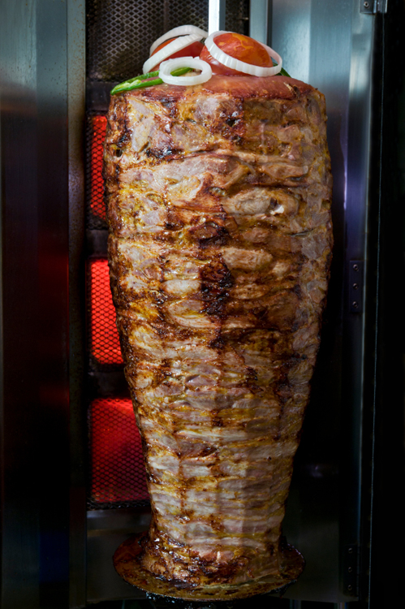

Homemade Kebab

Description
The doner kebab originated in Turkey centuries ago, and it’s thought it arrived in London in its current form (meat and veg inside bread) around the 1960s. I love this Guardian report which talks about the origins of the humble doner, and how it’s so much more than just a post-pub indulgence.
This is my simple, homemade version with inspiration taken from the one we know and hold dear. I’ve kept it as family friendly as possible with budget, nutrition and convenience in mind.
You can also make this in the oven and details are in the FAQs below.
Ingredients
- Lean mince
- Onion powder
- Garlic granules
- Ground cumin
- Paprika
- Dried Oregano
- Garlic
Steps
- Mix the slow cook ingredients (apart from the garlic bulb) together in a bowl with clean hands. You need to knead it with your hands until everything is fully combined and the meat is smooth.
- Put the meat mixture onto a sheet of tin foil and shape it with your hands into a brick/log type shape.
- Roll it up very tightly, twisting the ends of the tin foil like a sweetie wrapper to secure. Prick the foil. Place it in the bottom of the slow cooker.
- Cook as per the recipe. When the meat has cooled slightly, unwrap it and use a very sharp knife to slice very thin strips. Drizzle over the meat juices from the bottom of the slow cooker to serve (this is important as it will be quite dry without this)
- Take the unpeeled garlic bulb (yes a whole bulb!) and wrap up in tin foil. Place alongside the meat parcel in the slow cooker.
- Make the garlic sauce by squeezing the cooked very soft garlic from its skin. Just hold the bulb and squeeze from the bottom and it will squish straight out. Add the other sauce ingredients and mix well.